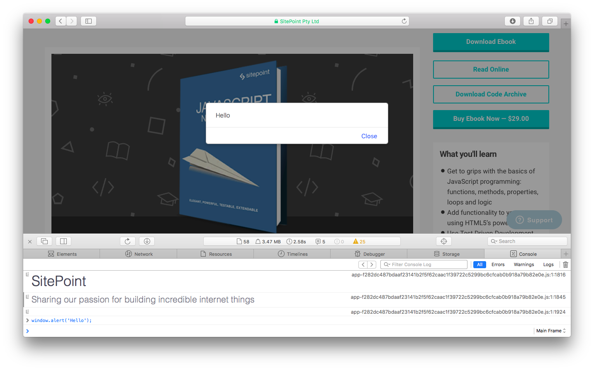
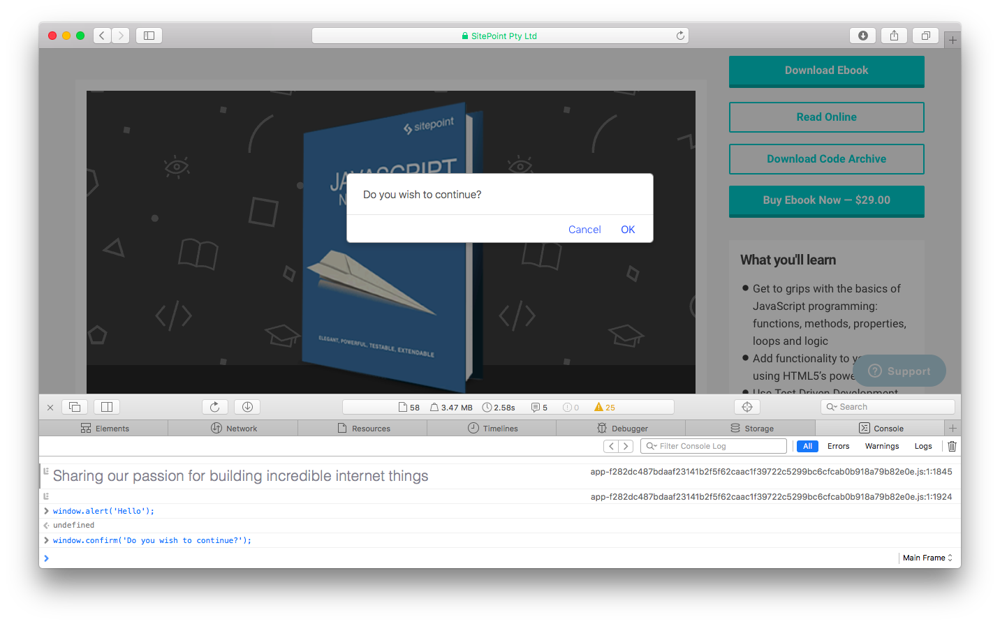
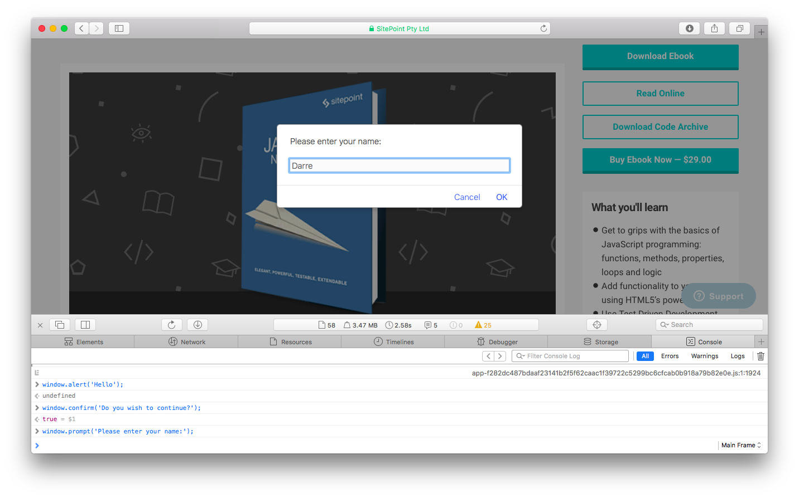

The BOM only makes sense in a browser environment. This means that other environments (such as Node.js) probably won’t have a window object, although they will still have a global object; for example, Node.js has an object called global.
If you don’t know the name of the global object, you can also refer
to it using the keyword this in the global scope. The following code
provides a quick way of assigning the variable global to the global
object:
// from within the global scope
const global = this;
The window.alert() method will pause the execution of
the program and display a message in a dialog box.

The window.confirm() method will stop the execution
of the program and display a confirmation dialog that shows the
message provided as an argument, and giving the options of OK or
Cancel.

The window.prompt() method will stop the execution of
the program. It displays a dialog that shows a message provided as
an argument, as well as an input field that allows the user to enter
text.

WARNING: These methods will stop the execution of a program in its tracks.
window.location property is an object that
contains information about the URL of the current page. It
contains a number of properties that provide information about
different fragments of the URL.
protocol property returns a string describing the
protocol used (such as http, https, pop2, ftp etc.). Note that
there is a colon (:) at the end.
host property returns a string describing the
domain of the current URL and the port number (this is often
omitted if the default port 80 is used).
pathname property returns a string of the path
that follows the domain
search property returns a string that starts with
a “?” followed by the query string parameters. It returns an empty
string if there are no query string parameters.
hash property returns a string that starts with a
“#” followed by the fragment identifier. It returns an empty
string if there is no fragment identifier.
origin property returns a string that shows the
protocol and domain where the current page originated from. This
property is read-only, so cannot be changed
reload() method can be used to force a reload
of the current page. If it’s given a parameter of true, it
will force the browser to reload the page from the server,
instead of using a cached page.
assign() method can be used to load another
resource from a URL provided as a parameter.
replace() method is almost the same as the
assign() method, except the current page will not be stored in
the session history, so the user will be unable to navigate
back to it using the back button.
toString() method returns a string containing
the whole URL.